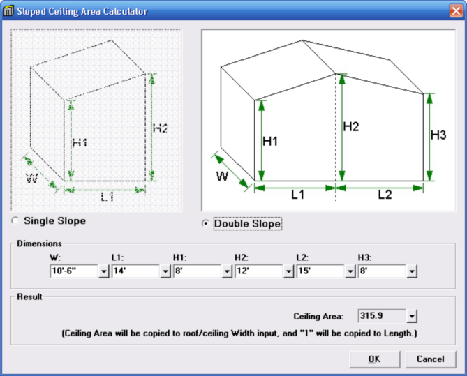

Sloped Ceiling Area Calculator (Room Data Window) |
  
|
Sloped Ceiling Area Calculator (Room Data Window) |
|
On the Room Data window, click the item in the dropdown help for the current roof's Width input or Length input to open the Sloped Ceiling Area Calculator, shown below. Scroll down below the picture for more information.

Overview
You use this dialog to specify the characteristics of only the ceiling that belongs to the current room. This dialog will calculate the area of a sloped ceiling for the most common room ceiling scenarios. The most common scenario is when the room is rectangular and the room's ceiling either has a single slope, or two slopes, as in the Double Slope picture. The values you enter on this dialog will be saved for each roof/ceiling in your project.
This dialog is not intended to handle every possible sloped ceiling situation. If the room and ceiling are not rectangular, or if the ceiling has more than one slope within the current room, and the slopes are arranged differently than in the Double Slope picture, then you should not use this dialog. You would instead need to calculate the room's ceiling area by hand, and then enter the area into the roof/ceiling's Width input and the number 1 into the roof/ceiling's Length input on the Room Data window. This dialog is only available when the current project is in Room Data entry mode (when you are not using Drawing Board to enter your rooms).
Single Slope, Double Slope option: Select whether the ceiling above the current room has one or two slopes. If you select Double Slope you will need to enter the L2 and H3 dimensions in addition to the others.
Dimensions (W, L1, etc.): Specifies the dimensions that correspond to the pictures at the top of this dialog. As with most dimensional inputs in Rhvac, you can use the shortcut to entering feet-and-inches dimensions by typing the number of feet, then a dash, then the number of inches (the program will automatically insert the feet and inches characters). The values you enter here will be saved for each roof/ceiling in the project.
Ceiling Area: This box shows the resulting ceiling area from the values you entered for the dimensions above. When you click OK, this area will be copied to the current roof/ceiling's Width input on the Room Data window, and the number 1 will be copied to the roof/ceiling's Length input.
OK: Saves your changes on this dialog, copies the Ceiling Area to the current roof/ceiling's Width input, and the number 1 to its Length input, then closes this dialog.
Cancel: Closes this dialog without making any changes to your project.